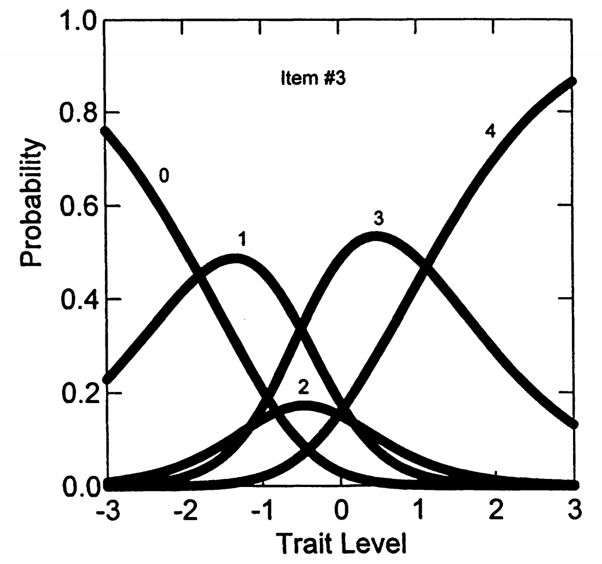
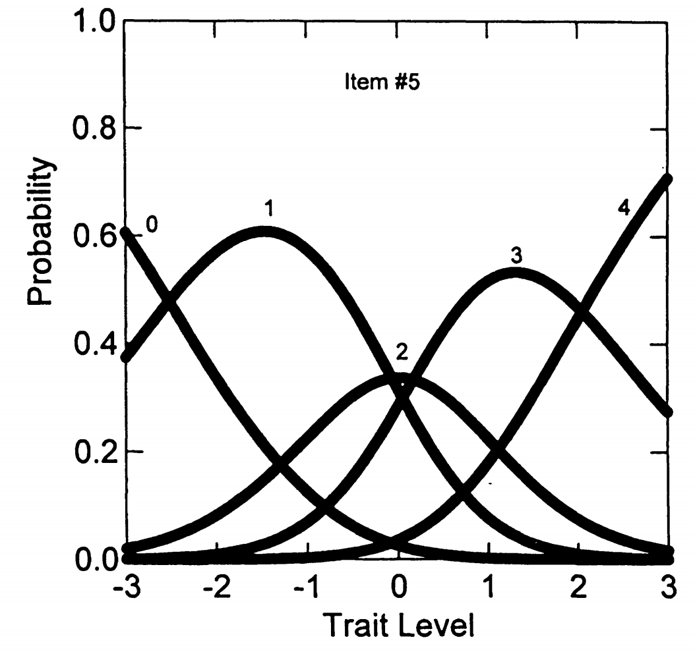

6. 部分计分模型（PCM）¶
6.1 开发背景¶
开发者： Masters (1982)
最初目的：
- 分析需要多个步骤的测试项目
- 对解题过程中完成的各个步骤给予部分计分很重要
适用范围：
- 自然适用于成就测验项目（如中学数学问题），部分正确答案是可能的
- 也非常适合分析态度或人格量表反应（多点量表评分）
6.2 PCM与前面模型的关键区别¶
模型类型
- 与GRM和M-GRM不同，PCM是分类-总计（divide-by-total）模型
- 也称为"直接"IRT模型
- 特定类别中反应的概率直接写为指数的比值除以指数之和
- 不需要像GRM那样的两步过程
模型性质：
- PCM可视为第4章1PL模型的扩展
- 具有标准Rasch模型的所有特性，如人和项目参数的可分离性
6.3 PCM的形式化表达¶
假设： 项目 \(i\) 的得分为 \(x\) = 0, ..., \(m_i\)，项目有\(K_i = m_i + 1\)个反应类别
公式 5.6： 在部分计分模型（Partial Credit Model, PCM）中，被试在项目 \(i\) 上取得得分 \(x \in \{0, 1, \dots, m_i\}\) 的概率由下式给出：
其中：
- \(\theta\)：被试的潜在能力水平；
- \(\delta_{ij}\)：项目 \(i\) 的第 \(j\) 个步骤参数，表示从得分 \(j - 1\) 跃升至 \(j\) 所需的能力；
- \(m_i\)：项目 \(i\) 的最大得分等级。
由于 PCM 中对每个项目仅能估计 \(m_i\) 个自由参数，为确保模型可识别，通常采用如下约定：
这样，最小得分 \(x = 0\) 时有：
即概率分子为：
这是一个常规的规范化设定，并非模型推导的结果，而是为了将得分 0 的响应作为基准类别，以简化整个分布的归一化处理。所有其他等级的响应概率都相对于这个基准定义。
6.4 公式逐步解释¶
6.4.1 分子部分¶
这表示要到达类别 x，需要累积完成从步骤 0 到步骤 x 的所有步骤。
具体展开
- 类别 0：\(\exp[0] = 1\)（什么都不做）
- 类别 1：\(\exp[(\theta - \delta_{i1})]\)（完成步骤1）
- 类别 2：\(\exp[(\theta - \delta_{i1}) + (\theta - \delta_{i2})]\)（完成步骤1和2）
- 类别 3：\(\exp[(\theta - \delta_{i1}) + (\theta - \delta_{i2}) + (\theta - \delta_{i3})]\)（完成步骤1、2、3）
6.4.2 分母部分¶
这是所有可能类别的分子之和，确保概率总和为1。
6.5 参数解释¶
参数含义
- \(\theta\) (theta)： 受试者的特质水平（如神经质程度）
- \(\delta_{ij}\)： 类别交叉点参数
- \(\delta_{i1}\)：从类别0到类别1的步骤难度
- \(\delta_{i2}\)：从类别1到类别2的步骤难度
- \(\delta_{i3}\)：从类别2到类别3的步骤难度
关键理解
- 累积性质： 要到达类别 x，必须"通过"所有前面的步骤
- 步骤难度： \(\delta_{ij}\) 越大，该步骤越难完成，需要更高的特质水平
- 交叉点含义： \(\delta_{ij}\) 是两个相邻类别反应曲线在特质量表上相交的点
- 与GRM的区别：
- GRM的 \(\beta_{ij}\) 是阈值概率为0.5的点
- PCM的 \(\delta_{ij}\) 是类别反应曲线的交叉点
6.6 步骤概念的理解¶
四类态度项目的例子
一个四类评分的态度项目，选项与步骤结构如下：
分数： 0 1 2 3
─────────┬──────────┬──────────┬─────────
选项： 完全不同意 有点同意 适度同意 同意
│ │ │
步骤1 步骤2 步骤3
受试者必须按顺序完成三个步骤：
- 在完全不同意和有点之间做决定（步骤1）
- 在有点和适度之间做决定（步骤2）
- 在适度和同意之间做决定（步骤3）
6.7 PCM在NEO-FFI数据上的参数估计¶
6.7.1 表5.5：PCM估计的估计项目参数和项目拟合统计量¶
| 项目 | δ₁ (SE) | δ₂ (SE) | δ₃ (SE) | δ₄ (SE) | χ² | df | p |
|---|---|---|---|---|---|---|---|
| 1 | -1.400 (.23) | -0.279 (.19) | -1.017 (.16) | 0.923 (.14) | 38.78 | 10 | 0.000 |
| 2 | -1.763 (.19) | 0.080 (.14) | 0.622 (.15) | 1.830 (.24) | 11.36 | 11 | 0.413 |
| 3 | -1.800 (.23) | 0.167 (.19) | -1.168 (.17) | 1.117 (.15) | 9.36 | 10 | 0.498 |
| 4 | -2.205 (.25) | -0.003 (.16) | -0.507 (.15) | 1.471 (.17) | 8.82 | 11 | 0.639 |
| 5 | -2.519 (.26) | -0.063 (.14) | 0.170 (.14) | 2.055 (.23) | 9.90 | 10 | 0.450 |
| 6 | -0.686 (.16) | 0.431 (.17) | -0.354 (.17) | 1.376 (.19) | 5.74 | 10 | 0.837 |
| 7 | -2.890 (.32) | -0.105 (.15) | -0.383 (.14) | 1.835 (.19) | 13.86 | 10 | 0.179 |
| 8 | -2.143 (.24) | -0.154 (.15) | 0.011 (.14) | 1.907 (.21) | 29.31 | 10 | 0.001 |
| 9 | -2.132 (.21) | 0.505 (.15) | -0.139 (.16) | 1.636 (.20) | 7.53 | 11 | 0.755 |
| 10 | -2.206 (.24) | 0.065 (.15) | -0.134 (.15) | 1.623 (.19) | 13.35 | 10 | 0.204 |
| 11 | -1.281 (.16) | 0.600 (.15) | 0.264 (.17) | 1.823 (.24) | 22.29 | 11 | 0.022 |
| 12 | -1.738 (.21) | 0.203 (.17) | -0.666 (.16) | 1.166 (.16) | 20.02 | 10 | 0.029 |
总模型拟合： χ² = 190.38, df = 124, p < 0.001 -2 log likelihood = 11,553.011
注：δₖ 表示从类别 k-1 到 k 的步骤参数；标准误（SE）括在括号中。
使用程序： PARSCALE (Muraki, 1993)
参数结构：
每个项目有4个类别交叉点参数：\(\delta_1\), \(\delta_2\), \(\delta_3\), \(\delta_4\)
6.7.2 重要发现1：参数"反转"现象¶
与GRM的对比
GRM中： 类别间阈值参数必然有序
PCM中： \(\delta_{ij}\)参数不像GRM那样必然有序
"反转"定义
当交叉点参数不是有序的，这种现象被称为"反转"(Dodd & Koch, 1987)
具体例子
看项目3（"压力下感觉要崩溃"）：
- \(\delta_1 = -1.800\)
- \(\delta_2 = 0.167\)
- \(\delta_3 = -1.168\)
- \(\delta_4 = 1.117\)
正常顺序应该是：\(\delta_1 < \delta_2 < \delta_3 < \delta_4\)
但实际是：\(\delta_1 < \delta_3 < \delta_2 < \delta_4\) （发生了反转）
6.7.3 图5.4：项目3的类别反应曲线（有反转）¶

图5.4显示了项目3的类别反应曲线，展现了反转现象。
交叉点的相对顺序： 步骤1、步骤3、步骤2、步骤4
实际含义：
- 从得分0→1（步骤1）：相对容易的转变
- 从得分2→3（步骤3）：相对容易的转变
- 从得分1→2（步骤2）：相对困难的转变
结果：
PCM很好地解释了项目3类别2很少被选择而类别3相对频繁被选择的现象（参见表5.1的频数分布）
6.7.4 图5.5：项目5的类别反应曲线（无反转）¶

图5.5显示了项目5的类别反应曲线，展现了正常的有序情况。
对比例子： 项目5（"感觉紧张焦虑"）
特点：
- 具有有序的交叉点参数
- 大多数受试者在类别1、2或3中反应（见表5.1）
- 每个反应选项都有其"最可能的特质水平区域"
6.7.5 反转的一般规律¶
Andrich (1988)的重要结论
有序交叉点：
- 如果项目内类别交叉点参数是有序的
- 则在潜在特质水平上存在每个反应选项最可能的区域
反转交叉点：
- 如果交叉点参数存在"反转"
- 这保证至少有一个类别永远不会是最可能的选择（条件是特质水平）
6.7.6 图形解释：反转现象的深入理解¶
让我们再看一次图5.4, 观察图5.4的关键特征
1. 类别2的"消失"：
- 看图中标号为"2"的曲线，它的峰值非常低（大约0.2）
- 在整个特质水平范围内，类别2几乎从来不是最可能的选择
- 这解释了为什么表5.1中项目3的类别2只有43人选择（相对较少）
2. 奇怪的选择模式：
- 特质水平-3到-2之间：主要选择类别0
- 特质水平-2到-1之间：主要选择类别1
- 特质水平-1到1之间：直接跳到类别3（跳过了类别2！）
- 特质水平1以上：主要选择类别4
3. 反转的具体体现：
由于\(\delta_3 = -1.168 < \delta_2 = 0.167\)，导致：
- 从类别2到类别3比从类别1到类别2更容易
- 人们倾向于"跳过"类别2
观察图5.5的正常特征
1. 每个类别都有"地盘"：
- 类别0：在\(\theta < -2.5\)时概率最高
- 类别1：在\(\theta \approx -1.5\)时概率最高
- 类别2：在\(\theta \approx 0\)时概率最高
- 类别3：在\(\theta \approx 1.5\)时概率最高
- 类别4：在\(\theta > 2.5\)时概率最高
2. 平滑过渡：
- 随着特质水平增加，人们从低类别平滑过渡到高类别
- 没有任何类别被"跳过"
3. 符合直觉：
- 神经质程度低的人选择"不同意"
- 神经质程度逐渐增加，选择也逐渐增加
- 这符合我们的心理学直觉
6.7.7 实际意义¶
对测验编制的启示
反转现象说明：
- 类别2的表述可能有问题
- 受试者可能觉得类别2和类别3之间没有清晰的区分
- 或者类别2的描述不够吸引人
改进建议：
- 重新设计类别标签
- 或者合并相似的类别
- 确保每个类别都有其独特的心理意义
PCM模型的优势：
PCM能够发现这种问题，而传统的统计方法可能忽略这种细微但重要的测验质量问题。
6.8 PCM的项目拟合统计量¶
我们再来看一次表5.5，重点关注PCM的项目拟合统计量。
| 项目 | δ₁ (SE) | δ₂ (SE) | δ₃ (SE) | δ₄ (SE) | χ² | df | p |
|---|---|---|---|---|---|---|---|
| 1 | -1.400 (.23) | -0.279 (.19) | -1.017 (.16) | 0.923 (.14) | 38.78 | 10 | 0.000 |
| 2 | -1.763 (.19) | 0.080 (.14) | 0.622 (.15) | 1.830 (.24) | 11.36 | 11 | 0.413 |
| 3 | -1.800 (.23) | 0.167 (.19) | -1.168 (.17) | 1.117 (.15) | 9.36 | 10 | 0.498 |
| 4 | -2.205 (.25) | -0.003 (.16) | -0.507 (.15) | 1.471 (.17) | 8.82 | 11 | 0.639 |
| 5 | -2.519 (.26) | -0.063 (.14) | 0.170 (.14) | 2.055 (.23) | 9.90 | 10 | 0.450 |
| 6 | -0.686 (.16) | 0.431 (.17) | -0.354 (.17) | 1.376 (.19) | 5.74 | 10 | 0.837 |
| 7 | -2.890 (.32) | -0.105 (.15) | -0.383 (.14) | 1.835 (.19) | 13.86 | 10 | 0.179 |
| 8 | -2.143 (.24) | -0.154 (.15) | 0.011 (.14) | 1.907 (.21) | 29.31 | 10 | 0.001 |
| 9 | -2.132 (.21) | 0.505 (.15) | -0.139 (.16) | 1.636 (.20) | 7.53 | 11 | 0.755 |
| 10 | -2.206 (.24) | 0.065 (.15) | -0.134 (.15) | 1.623 (.19) | 13.35 | 10 | 0.204 |
| 11 | -1.281 (.16) | 0.600 (.15) | 0.264 (.17) | 1.823 (.24) | 22.29 | 11 | 0.022 |
| 12 | -1.738 (.21) | 0.203 (.17) | -0.666 (.16) | 1.166 (.16) | 20.02 | 10 | 0.029 |
总模型拟合统计：
- χ² = 190.38，df = 124，p < 0.001
- -2 log likelihood = 11,553.011
注：δₖ 表示从类别 k–1 到 k 的步骤阈值参数。括号内为标准误（Standard Error）。
6.8.1 表5.5：拟合统计量结果¶
右侧列显示： PARSCALE输出的似然比卡方拟合统计量（详见第9章）
结果汇总：
- 12个项目中有4个未能被估计的PCM项目参数很好地表示
- 这些项目的p < 0.05，表明拟合不佳
6.8.2 整体拟合评估¶
项目间可加性：
- 卡方统计量在项目间是可加的
- 总卡方值：190.39（124自由度）
- p值 < 0.001，表明整体模型拟合不佳
对数似然值：
- -2倍对数似然值 = 11,553.011
- 虽然该统计量不能单独用于评估模型拟合
- 但在比较PCM与下一节的广义部分计分模型时有用
6.8.3 预期中的结果¶
为什么拟合不佳？
还记得我们之前在GRM分析中发现的吗？
- 不同项目的斜率参数变异很大（表5.3）
- 项目9：\(\alpha = 2.09\)
- 项目8：\(\alpha = 0.65\)
PCM的限制：
- PCM假设所有项目具有相同的斜率（都等于1.0）
- 但实际数据显示项目斜率差异很大
- 因此PCM无法很好拟合这个数据